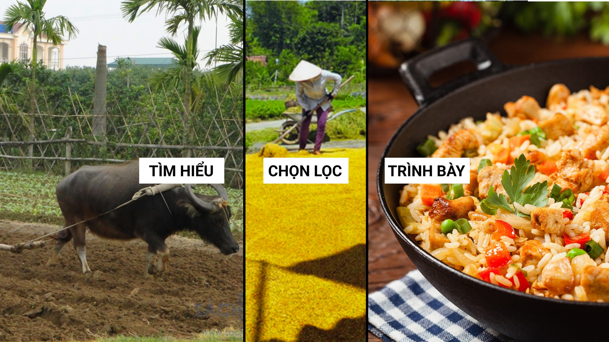

Cỏ xanh, mây trắng, nắng vàng
Bước đi lặng lẽ lang thang giữa đời
Chào mừng bạn đến với trang web "Thơ của Cỏ Xanh". 
Tôi là Cỏ Xanh, một người yêu thích thơ. Với thơ, thơ là thú vui đơn giản không cầu kỳ. Nếu như chơi nhạc cần cây đàn ghi-ta, piano... Vẽ tranh cần bút chì, màu vẽ. Thì với thơ tôi, tôi viết luôn vào điện thoại. Hoặc thậm chí chỉ cần ghi nhớ trong trong đầu, chứ không cần viết ra. Đó là sự tiện lợi mà tôi yêu thích.
Với tôi thơ không phải thứ gì quá đao to búa lớn. Tôi thích viết bài thơ về cuộc sống, con người, tình yêu,... Đối với tôi, thơ chỉ cần vui vẻ thôi là đủ, không cần phải gì quá.
Nếu bạn cần tìm bài thơ nhẹ nhàng, vui vẻ, không cầu kỳ -> Ở đây dành cho bạn.
Ở đây tôi đang muốn hướng tới cách làm tốt cho Thơ của Cỏ Xanh có các bước:
- 1. Tìm hiểu: tìm hiểu kỹ càng các thông tin trước khi làm, tham khảo các vần trước, để có các vần thơ và nội dung hợp lý.
- 2. Chọn lọc: khi tìm hiểu xong chọn lọc ra các điểm phù hợp để làm một bài thơ hoàn chỉnh, có vấn điệu rõ ràng.
- 3. Trình bày: bài thơ cũng cần có hình thức dễ dàng cho người đọc tiếp nhận hơn
Hi vọng tôi sẽ sớm làm được như những gì mình mong đợi.
-> Email: caysautotlua@gmail.com
-> Địa chỉ: Hà Nội, Việt Nam